Violão para iniciantes
Aprenda do zero com técnicas práticas, do cifrado básico à sua primeira música completa.
schedule15hrs
calendar_monthqua/sex
groupIniciante
Aulas práticas, didáticas e acessíveis para quem está começando do zero. Com conteúdo pensado para transformar iniciantes em músicos confiantes.
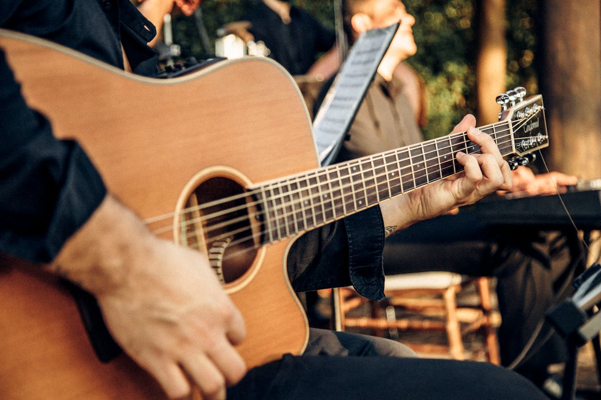
Aprenda do zero com técnicas práticas, do cifrado básico à sua primeira música completa.
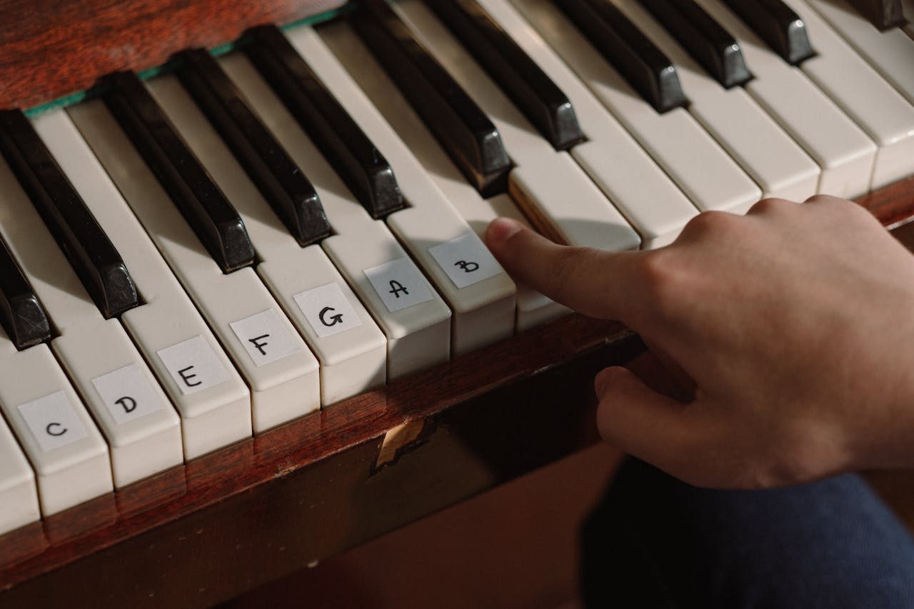
Domine a leitura de notas, coordenação das mãos e toque suas músicas favoritas.
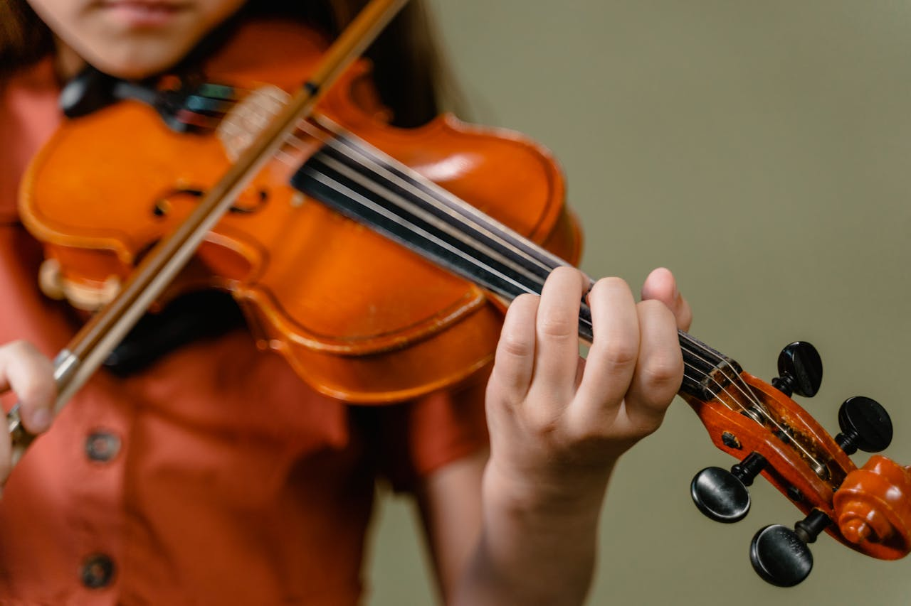
Aprenda a postura correta, a produzir som limpo e a tocar melodias simples com confiança.
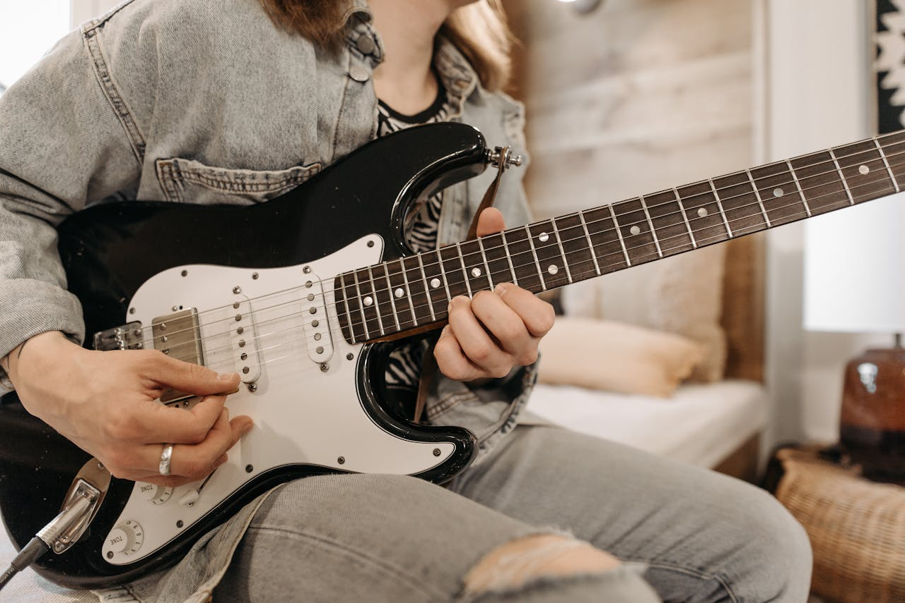
Do power chord ao solo, aprenda o essencial para tocar rock, pop e muito mais.
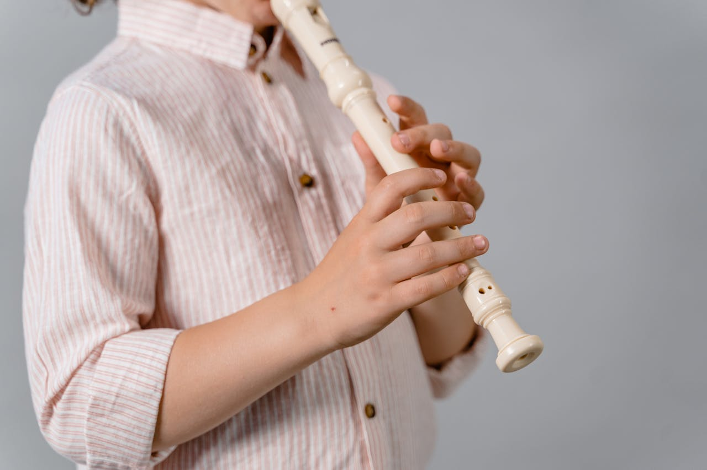
Desenvolva o sopro, a digitação e a leitura musical tocando músicas reais desde cedo.
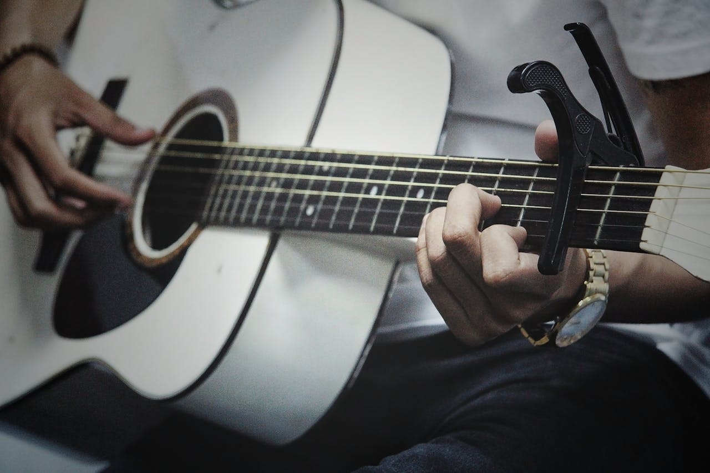
Aprofunde técnicas de harmonia, fingerpicking e improvisação para elevar seu nível musical.
Expanda seu vocabulário musical com acordes avançados, arranjos e leitura de partitura.
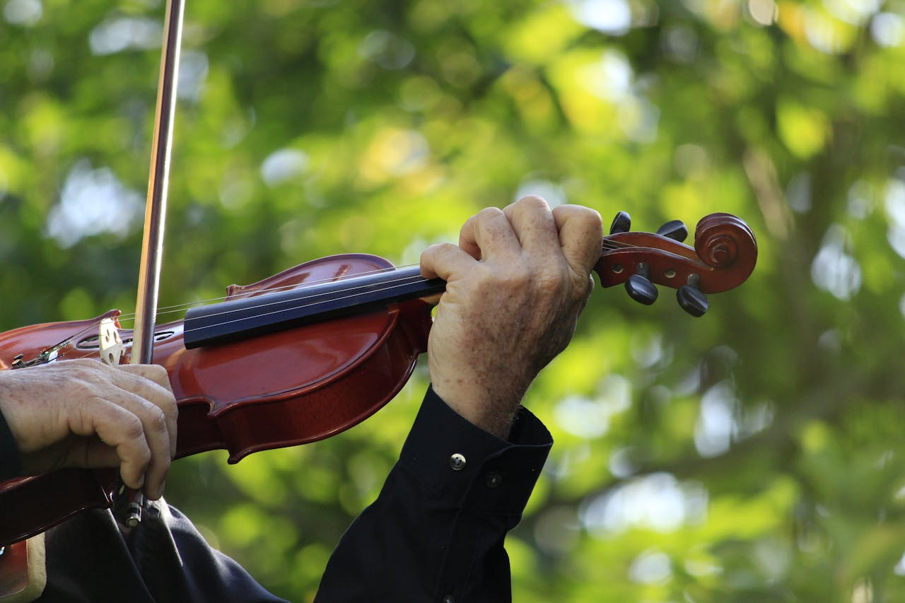
Trabalhe afinação, dinâmica e expressividade para tocar peças de maior complexidade.
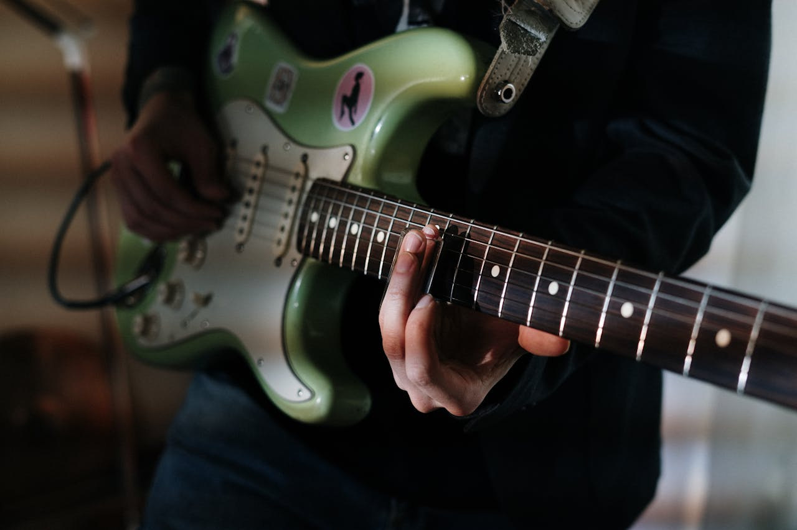
Explore escalas, técnicas de improviso e diferentes estilos para ampliar sua versatilidade.
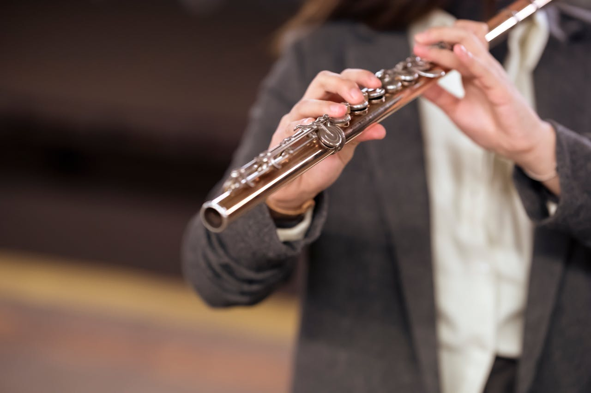
Refine o controle do sopro, a articulação e interprete repertórios de maior dificuldade.
Domine composição, harmonia funcional e performance para atuar profissionalmente.
Desenvolva improvisação, composição e técnica de palco para performances de alto nível.
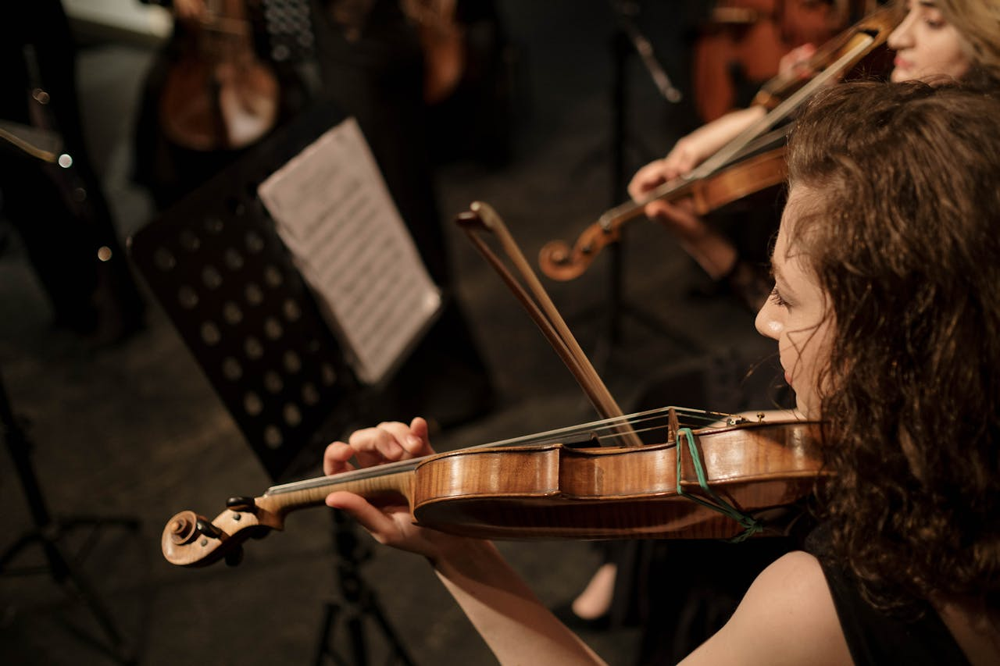
Interprete repertório erudito e contemporâneo com domínio técnico e expressão artística plena.
Aperfeiçoe técnicas de virtuosismo, criação musical e prepare-se para atuar no mercado.
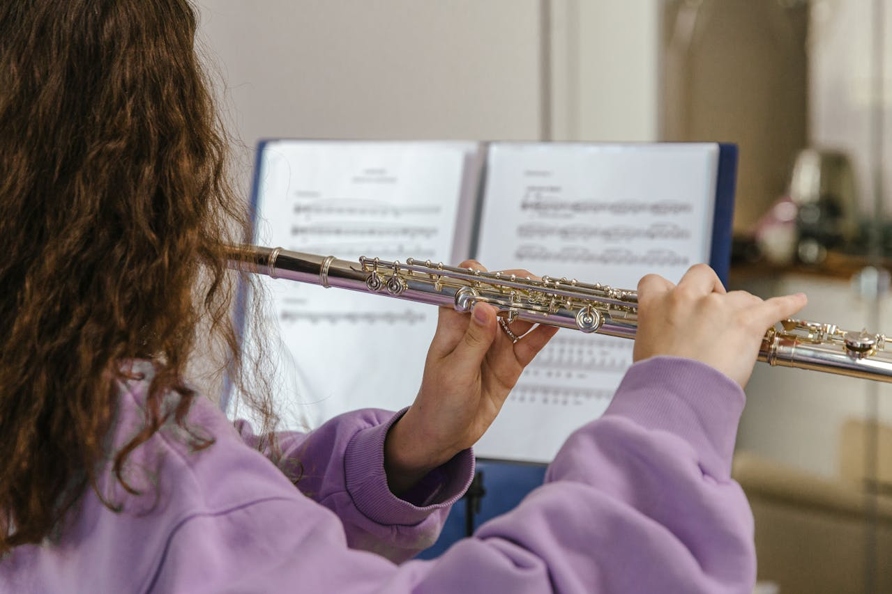
Explore repertório erudito, improvisação e técnicas estendidas para uma performance profissional.